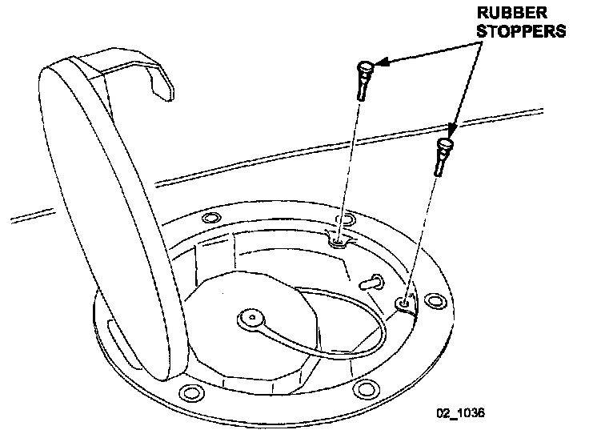
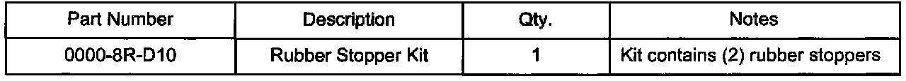
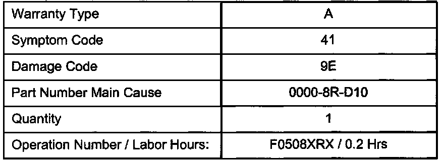

Body - Accessory Chrome Fuel Door Won't Open
Bulletin No: 09-008/02Last Issued: 03/08/2002
Subject:
ACCESSORY CHROME FUEL DOOR WILL NOT OPEN
APPLICABLE MODEL(S)/VINS
1999 - 2002 Miata with accessory chrome fuel door
DESCRIPTION
The accessory chrome fuel door may not open when the release lever is pulled from inside the vehicle's center console. This may be caused by the (2) rubber fuel door stoppers sticking to the underside of the fuel door. Follow the procedure outlined in this bulletin for installing revised rubber fuel door stoppers.
REPAIR PROCEDURE
1. Verify customer concern.

2. Remove the (2) existing rubber stoppers from the fuel door.
3. Install (2) revised rubber stoppers pushing downwards.
NOTE:
Make sure the stoppers are seated completely in the fuel door assembly.
4. Verify repair.

PART(S) INFORMATION
WARRANTY INFORMATION

Note:
This information applies to verified customer complaints on vehicles covered under normal warranty. Refer to the SRT microfiche for warranty term information.